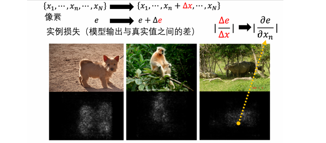
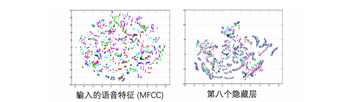
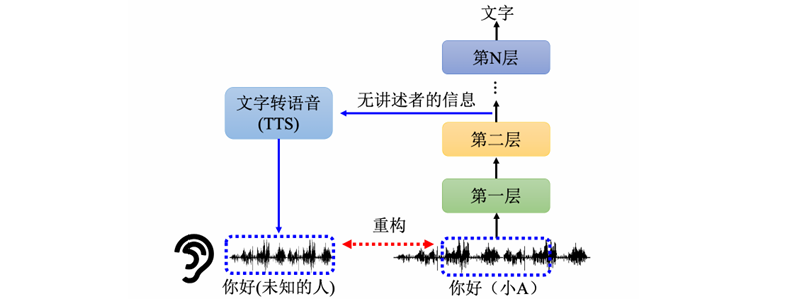
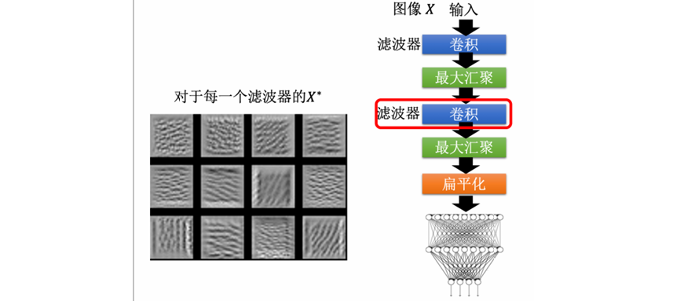
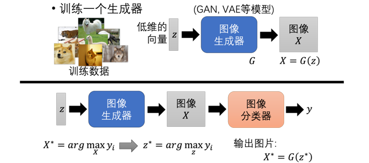

Chapter18. Explainable Artificial Intelligence¶
可解释性人工智能（eXplainable Artificial Intelligence，XAI）研究的是：
- 模型为什么给出这个答案
- 模型到底看了输入的哪些部分
- 模型内部表示学到了什么信息
- 模型整体上认为某个类别应该长什么样子
Tip
- 深度学习模型通常表现很强，但也常常像黑盒：
- 我们知道输入和输出，却不一定知道中间为什么会这样决策。
- XAI 的目标是让强大的黑盒模型在关键场景中也能被检查、被质疑、被信任。
18.1 Why Explainability Matters¶
模型得到正确答案，不代表它真的学到了我们期待它学的东西。
- 机器学习的模型表现出很高的分类准确率，但可能实际利用的是数据集中的偏差、背景、文字水印或其他捷径。一旦环境变化，模型就可能失效。
Real-world Scenarios
很多真实场景中，模型必须给出理由：
- 金融：银行用模型判断是否放贷，用户有权知道被拒绝的原因
- 医疗：模型给出疾病判断，医生需要知道模型依据了哪些症状或影像区域
- 法律：模型辅助判断假释风险，需要检查模型是否存在偏见或歧视
- 自动驾驶：车辆突然急刹，需要知道是因为看到行人还是模型误判
可解释性还可以帮助模型改进：
- 找出模型错误依赖的特征
- 检查数据集是否有 bias
- 判断模型有没有学到任务真正需要的规律
18.2 Interpretability of Decision Tree¶
==决策树（decision tree）==是一个相对容易解释的模型：
每个节点问一个问题，根据答案往左或往右走，当你走到叶子节点时得到最终判断
我们可以沿着路径读出决策规则，因此单棵决策树有比较好的可解释性。
但是决策树也不是万能答案：
- 特征很多时，树会变得非常复杂
- 节点太多时，人也很难理解完整规则
- 实际比赛和工业中常用的是 random forest / boosted trees，而不是单棵树
- 单棵树可以解释，而一整片森林就很难解释
18.3 Goal of XAI¶
为了解释比如决策树、随机森林的意义，我们首先应该定义可解释性的目标是什么。一个常见误解是：好的解释必须完整说明整个模型的全部运作机制，但这通常不现实，也未必必要。
1970 年哈佛大学教授做的一个心理学实验：有人在图书馆插队复印，只要给出一个“理由”，即使理由很空泛，别人接受插队的概率也会大幅上升。
- 这说明人类在很多时候需要的是：
一个能被理解的理由、一个能让人接受的解释、一个足以支持信任或质疑的证据 - 所以在 XAI 中，解释常常有一定主观性：
- 对人来说合理的解释，未必等于模型真实的内部机制
- 解释方法常常是在黑盒行为和人类理解之间搭桥
Warning
可解释性结果不能盲目信任。解释本身也是一种模型或算法，也可能误导人。
XAI 常分为两大类：局部解释（local explanation）和全局解释（global explanation）
18.4 Local Explanation¶
局部解释针对某一个具体输入：
- 给模型一张猫的图片，模型说这是猫。问题是：这张图片中的哪些部分让模型认为它是猫？
局部解释关心：
- 某个样本为什么被这样分类
- 输入的哪些部分最关键
- 如果改变某部分，输出会不会变化
Occlusion¶
最直接的局部解释方法是 遮挡法（occlusion）。
假设输入可以拆成许多部分：
- 这部分可以是图片中的像素或区域、文本中的 token、音频中的时间片段、时间序列中的时间点
遮挡法的做法：
- 把原始输入 \(x\) 输入模型，得到输出
- 依次遮挡或删除某个部分 \(x_i\)
- 再次输入模型，观察输出变化
- 如果遮挡 \(x_i\) 后输出大幅改变，说明 \(x_i\) 很重要
Using Gradient¶
Saliency Map¶
另一种常见方法是使用梯度得到 显著图（saliency map）。

假设输入是一张图片：
其中 \(x_i\) 是第 \(i\) 个像素。若模型的损失为 \(e\)，可以计算 \(\dfrac{\partial e}{\partial x_i}\)
- 如果轻微改变 \(x_i\) 会让损失大幅变化，则 \(x_i\) 很重要
- 如果改变 \(x_i\) 几乎不影响损失，则 \(x_i\) 不重要
因此可以用梯度大小表示重要性：
- 把所有像素的重要性 \(S_i\) 画出来，就得到 saliency map
SmoothGrad¶
Question
如果模型判断一张图是马，但 saliency map 最亮的位置在图片角落的水印，而不是马身上，说明模型可能学到了数据集偏差。
原始 saliency map 往往噪声很多，于是可以使用 SmoothGrad。
做法：
- 对原始输入加入多组随机噪声
$$
x^{(m)}=x+\epsilon^{(m)}
$$
- 分别计算每个 noisy input 的 saliency map
- 把这些 saliency map 平均
公式写作：
- 这样可以减少随机噪声，让重要区域更集中。
Gradient Saturation¶
梯度方法有一个重要问题：梯度饱和（gradient saturation）
教材用大象鼻子的例子说明：
- 鼻子越长，越像大象
- 但长到一定程度后，再变长也不会让“大象概率”继续明显增加
- 此时梯度可能接近 0
如果只看梯度，会误以为鼻子长度不重要。但实际上鼻子长度显然是判断大象的重要特征。因此梯度小不一定代表特征不重要，也可能代表模型已经处在饱和区域。
Integrated Gradients¶
为了解决梯度饱和问题，可以使用 积分梯度（integrated gradients）
- 衡量的是从“没有信息的输入”变成当前输入的过程中，每个维度累计贡献了多少
- 它不是只看当前点的梯度，而是从一个 baseline \(x'\) 逐渐走到输入 \(x\)，沿途累计梯度：
- 其中：
- \(x'\)：baseline，例如全黑图片； \(x\)：原始输入
- \(F(\cdot)\)：模型对目标类别的输出
Representation Visualization¶
除了看输入哪些部分重要，也可以看模型内部如何处理输入。
假设某一层隐藏表示是一个高维向量：
- 高维向量不容易直接观察，可以用 PCA、T-SNE 或 UMAP 等降维方法把它投影到二维，然后把不同样本的隐藏表示画在平面上。
Speech Example
在语音识别中：
- 原始声音特征可能无法清楚区分“内容相同但说话人不同”的样本
- 经过多层神经网络后，隐藏表示可能按语义内容聚集
- 说明模型逐渐去除了说话人差异，保留了语音内容

这种可视化可以帮助我们理解：
- 哪一层开始形成类别结构
- 模型是否学到了说话内容
- 模型是否还保留 speaker information 或 noise information
Probing¶
探针（probing）：训练一个分类器检查某层表示中是否包含某种信息。
- 以 BERT 为例，假设取出某一层的 token embedding 训练一个 POS classifier，如果这个 classifier 准确率高，说明该层 embedding 中包含较多词性信息；也可以训练 NER classifier 用来检查这一层是否包含人名、地名、组织名等信息。
Be Careful with Probes
使用 probing 时要小心：
- 如果 probe 太弱，准确率低不代表表示中没有信息
- 如果 probe 太强，可能自己学会任务，而不是证明原表示已经编码了信息
- probe 的训练质量、模型容量和数据集都会影响结论
Generative Probing¶
探针不一定是分类器，也可以是生成模型。

例如语音模型中，可以把某层隐藏表示输入到 TTS 模型，让它重建声音：
如果重建出的声音：
- 内容还在，但说话人信息消失，说明该层可能去除了 speaker information
- 噪声消失，说明该层可能过滤了噪声
- 内容也消失，说明该层表示已经不适合还原原始语音
这种方法可以帮助分析不同层负责保留或丢弃哪些信息。
18.5 Global Explanation¶
全局解释不针对某个特定输入，而是分析整个模型：
- 对这个模型而言，什么样的东西叫做猫？
全局解释关心：
- 某个 filter 想检测什么模式
- 某个类别在模型心中长什么样
- 模型整体学到的特征是什么
Feature Map
-
以 CNN 为例，假设某个 filter 的 feature map 为：\(a_{ij}^{(k)}(X)\)
- 其中 \(X\) 为输入图片，\(k\) 为第 \(k\) 个 filter，\(a_{ij}^{(k)}\) 是该 filter 在位置 \((i,j)\) 的激活值
-
为了知道这个 filter 喜欢什么模式，可以直接优化输入图片：
- 也就是说，可以用梯度上升法找到 $X^*$，让这个 filter 的总激活越大越好。
在 MNIST 这类任务中，浅层或中层 filter 往往会学到：横线、竖线、斜线以及局部笔画

这说明 CNN 的中间层可能在检测数字的基本笔画结构。
Class Visualization¶
既然模型能将图片分类为某个类别 \(c\)，那么什么样的图片能让模型最确信它是类别 \(c\)？
- 固定模型参数不动，把输入图片当作可优化变量，通过梯度上升让类别的输出分数最大化：
- 问题：直接这样优化，得到的图片往往是人眼看不懂的高频噪声。因为模型学到的判别特征可能是一些人眼不敏感的 pattern（比如某种特定频率的纹理），这些 pattern 在数学上确实能让分数变大，但对人类毫无可读性。
为了让生成出来的图片更像人类能理解的图片，可以加入正则化（regularization）：
加入 \(R(X)\) 的目的是让生成的图片同时满足人类对"自然图片"的先验认知：
| 正则化方法 | 作用 |
|---|---|
| \(\|X\|_2^2\)（L2 范数） | 限制像素值不要过大 |
| 限制图像变化剧烈程度 | 避免高频噪声 |
| 相邻像素平滑性 | 让图片更"连续" |
| Total variation penalty | 抑制相邻像素间的剧烈跳变 |
Note
这些正则项本质上是强加的人类先验。我们看到的"解释"并不是模型的"真实想法"，而是在人类审美约束下的近似。正则化越强，图片越好看，但可能离模型真正的决策依据越远。
Generative Models¶
直接优化像素空间自由度太大，优化会陷入高频噪声。
- 更好的方式是先训练一个生成器（如 GAN 或 VAE）来约束搜索空间

Train
- Step 1：训练一个生成模型 （如 GAN 或 VAE）
$$
X=G(z)
$$
- $z$：低维 latent vector
- $G$：GAN / VAE 等生成模型，只生成"看起来像真实图片"的内容，比随机像素更合理
- Step 2：不再优化 \(X\)，而是优化 \(z\)
- 分类器 $y_c$ 对 $G(z)$ 输出的图片做分类
- 梯度可以**回传到 $z$**，用梯度上升更新 $z$
- $z$ 的维度远低于像素空间，搜索空间小得多
- Step 3：得到最终解释图片
把这个图像生成器和图像分类器接在一起即可。
图像生成器输入是 \(z\)，输出 \(G(z)\) 是一张图片，分类器把这个图片当做输入，输出分类的结果。
这样做的好处是：
- \(G(z)\) 通常更像真实图片
- 搜索空间被限制在生成模型学到的 image manifold 上
- 生成出的解释更容易被人理解
缺点是：
- 解释结果依赖生成器质量
- 如果生成器本身有 bias，解释也会有 bias
- 生成器限制了模型可能真正依赖的非自然模式
18.6 LIME¶
除了直接解释模型内部，还可以用简单模型去近似黑盒模型。
LIME（Local Interpretable Model-agnostic Explanations）的想法是：
- 用一个可解释模型，在某个输入附近局部模仿黑盒模型
- 这个局部区域内的行为是可以用线性模型去模仿的，所以它叫局部的可解释性